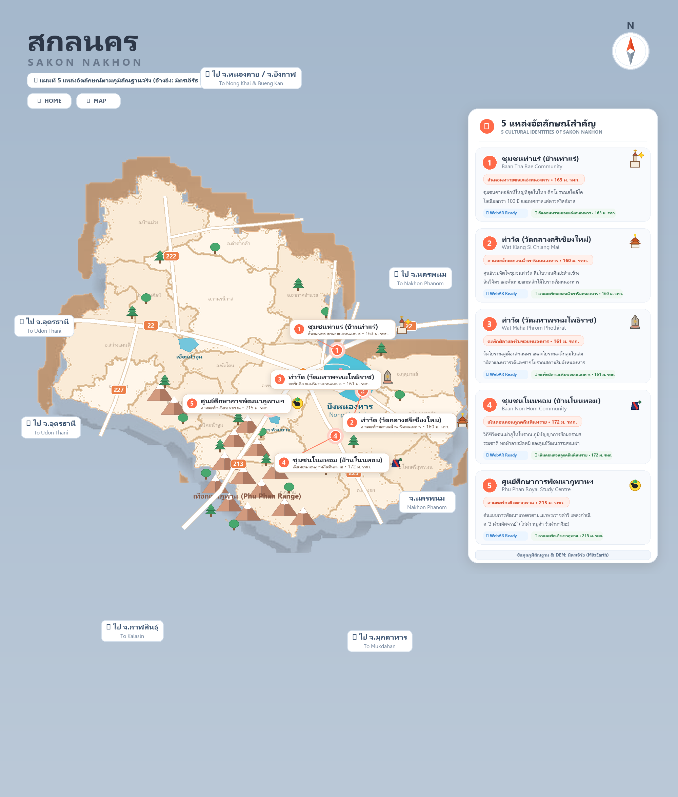

เทคโนโลยีชุมชน
เปิดตัวระบบ WebAR สแกนสถาปัตยกรรมโบราณตึกฝรั่งเศสท่าแร่
ทีมนักศึกษาฝึกงานร่วมกับผู้นำชุมชนท่าแร่ ติดตั้งป้าย QR Code แนะนำเส้นทางท่องเที่ยวเชิงวัฒนธรรมผ่านมุมมอง AR จำลองบรรยากาศในอดีต
อ่านบทความฉบับเต็มร่วมค้นพบเรื่องราว วัฒนธรรม และภูมิปัญญาท้องถิ่น ผ่านโมเดลสามมิติและเทคโนโลยีความเป็นจริงเสริม
เข้าสู่เว็บไซต์การประยุกต์ใช้นวัตกรรม 3D Photogrammetry และเทคโนโลยี WebAR เชื่อมโยงมรดกทางวัฒนธรรม ประวัติศาสตร์ สถาปัตยกรรม และภูมิปัญญาท้องถิ่น ให้ทุกคนสามารถสัมผัสและเรียนรู้ได้เสมือนจริงผ่านสมาร์ตโฟน
เลือกสัมผัสเรื่องราว องค์ความรู้ และโมเดลสามมิติที่ผ่านการสแกนและขึ้นรูปด้วยเทคโนโลยีความเป็นจริงเสริม
แผนที่สามมิติผสานศิลปะภาพวาดนำเที่ยว แสดงพิกัดจริงตามภูมิศาสตร์ 18 อำเภอ ทะเลสาบหนองหาร แนวเทือกเขาภูพาน และโครงข่ายทางหลวงเชื่อมโยง 5 ชุมชน

ลักษณะภูมิศาสตร์ (มิตรเอิร์ธ): ตั้งอยู่บนแนวสันดอนทรายธรรมชาติ (Natural Levee) ริมขอบแอ่งยุบตัวหนองหาร พื้นที่ยกตัวสูงน้ำไม่ท่วมถึงในฤดูน้ำหลาก เหมาะแก่การตั้งชุมชนคาทอลิกโบราณและสถาปัตยกรรมตึกโคโลเนียลกว่า 100 ปี
ลักษณะภูมิศาสตร์ (มิตรเอิร์ธ): ลานตะพักตะกอนน้ำพาริมทะเลสาบฝั่งตะวันออกเฉียงใต้ (Lacustrine Terrace) บริเวณดินเหนียวและตะกอนน้ำพา เป็นที่ตั้งของสิมโบราณศิลปะล้านช้างอันวิจิตรริมฝั่งหนองหาร
ลักษณะภูมิศาสตร์ (มิตรเอิร์ธ): แนวตะพักศิลาแลงริมขอบแอ่งน้ำ มีชั้นศิลาแลงและหินทรายในระดับตื้น ซึ่งคนโบราณยุคทวารวดีใช้สลักเป็นใบเสมาศิลาแลงและฐานอุโบสถเก่าแก่คู่เมืองสกลนคร
ติดตามความเคลื่อนไหว กิจกรรมการลงพื้นที่ และการถ่ายทอดเทคโนโลยีสู่ชุมชน
ทีมนักศึกษาฝึกงานร่วมกับผู้นำชุมชนท่าแร่ ติดตั้งป้าย QR Code แนะนำเส้นทางท่องเที่ยวเชิงวัฒนธรรมผ่านมุมมอง AR จำลองบรรยากาศในอดีต
อ่านบทความฉบับเต็มการบันทึกกระบวนการย้อมครามธรรมชาติและลวดลายผ้าทอมือเอกลักษณ์โนนหอม ให้ผู้คนได้เรียนรู้เนื้อผ้าและขั้นตอนการทอแบบ 3D Interaction
อ่านบทความฉบับเต็มนำเทคโนโลยี AR มาต่อยอดองค์ความรู้ ไก่ดำ หมูดำ และโคเนื้อทาจิมะภูพาน เพื่อสร้างความเข้าใจแก่เยาวชนและผู้เข้าเยี่ยมชมศูนย์ศึกษาฯ
อ่านบทความฉบับเต็มภาพถ่ายบรรยากาศการลงพื้นที่จริง การสแกนวัตถุ และการทำงานร่วมกับหน่วยงานและชุมชน
ความร่วมมือทางวิชาการ การพัฒนาเทคโนโลยี และการสนับสนุนจากภาคีเครือข่ายภาครัฐ สถาบันการศึกษา และชุมชนท้องถิ่น
Digital Cultural Innovation Lab • มหาวิทยาลัยราชภัฏสกลนคร
ศูนย์กลางการวิจัยและพัฒนาเทคโนโลยีสารสนเทศเพื่อการอนุรักษ์มรดกทางวัฒนธรรม ดำเนินการสำรวจ รวบรวมข้อมูล ขึ้นรูปโมเดล 3D และพัฒนาแพลตฟอร์ม WebAR
อำเภอเมือง จังหวัดสกลนคร
พันธกิจ: พัฒนาสื่อดิจิทัลเสมือนจริงเพื่อยกระดับคุณค่ามรดกทางวัฒนธรรมสู่เศรษฐกิจสร้างสรรค์
ภาควิชาธรณีวิทยา คณะวิทยาศาสตร์ จุฬาลงกรณ์มหาวิทยาลัย
สนับสนุนข้อมูลภูมิสารสนเทศ แบบจำลองระดับความสูงเชิงเลข (DEM) และการวิเคราะห์ภูมิสัณฐาน เพื่อเชื่อมโยงมรดกวัฒนธรรมเข้ากับบริบททางธรรมชาติอย่างลึกซึ้ง
ปทุมวัน กรุงเทพมหานคร
พันธกิจ: ส่งเสริมการนำฐานข้อมูลธรณีวิทยาและภูมิศาสตร์สู่การประยุกต์ใช้เพื่อการเรียนรู้สาธารณะ
ชุมชนท่าแร่ • ชุมชนท่าวัด • ชุมชนโนนหอม • ศูนย์ศึกษาการพัฒนาภูพานฯ
ภาคีเครือข่ายปราชญ์ชาวบ้าน ผู้นำชุมชน และผู้บริหารแหล่งเรียนรู้ ร่วมให้ข้อมูลประวัติศาสตร์ อนุญาตให้บันทึกภาพ 3D และทดสอบการใช้งานสื่อ AR
แหล่งเรียนรู้ทั้ง 5 แห่ง จังหวัดสกลนคร
พันธกิจ: อนุรักษ์ ถ่ายทอดภูมิปัญญาท้องถิ่น และต่อยอดสู่การท่องเที่ยวชุมชนอย่างยั่งยืน
ข้อความแจ้งเตือน